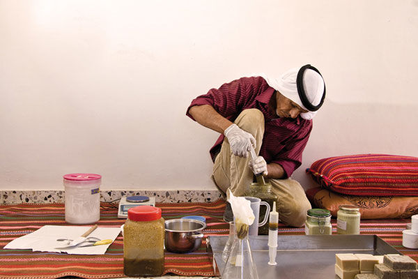

The Sustainability Laboratory was established in 2008 by Dr. Michael Ben-Eli in order to help address urgent sustainability issues facing the planet.
To guide its activities, The Lab has developed its own unique, action-oriented conceptual framework, which takes a holistic perspective and features cross-sector and cross-disciplinary collaboration.
Applying this holistic approach, The Lab engages in research, development, and education activities focused on key sustainability-related issues. Our growing portfolio of projects demonstrate cutting edge, model strategies for addressing sustainability challenges on a local, regional, and planetary scale.
Why A Lab
Addressing the sustainability challenge requires going beyond mere adjustments in existing patterns of doing things to fundamentally changing the way we manage human affairs.
The unprecedented nature of the required change means that there is no tried-and-true operating manual to guide us. The capacity for thinking in new paradigms and pursuing creative experimentation is, therefore, essential. Hence the concept of a laboratory, with connotations of exploration, radical innovation, going beyond the familiar, and breaking new ground.
Just as the great defense laboratories assembled extraordinary talent to develop destructive technologies, The Sustainability Laboratory will harness worldwide talent to advance a planetary sustainability agenda, helping humanity secure the promise of its next evolutionary step.
Mission
"To act as a catalyst for accelerating transition of world society and its economy to a sustainable basis by researching, developing, and demonstrating breakthrough sustainability practices, thereby expanding prospects and producing positive, life-affirming impacts on people and ecosystems in all parts of the world."
Areas of Activity
The Lab’s work will focus on four interrelated areas of activity that are essential for catalyzing deep change: Development Projects, Technology Innovations, Green Economics, and Education.
These four main areas of activity will be designed to reinforce one another, thus amplifying the cumulative impacts of Lab initiatives.